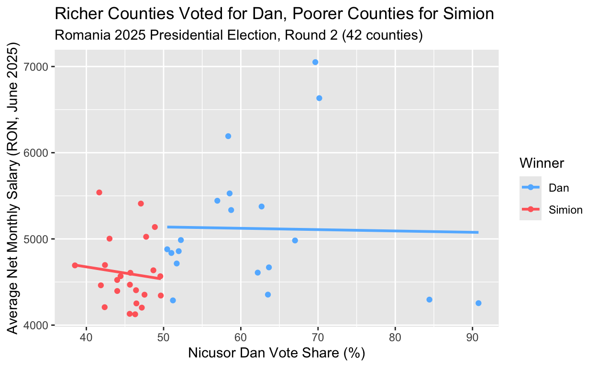
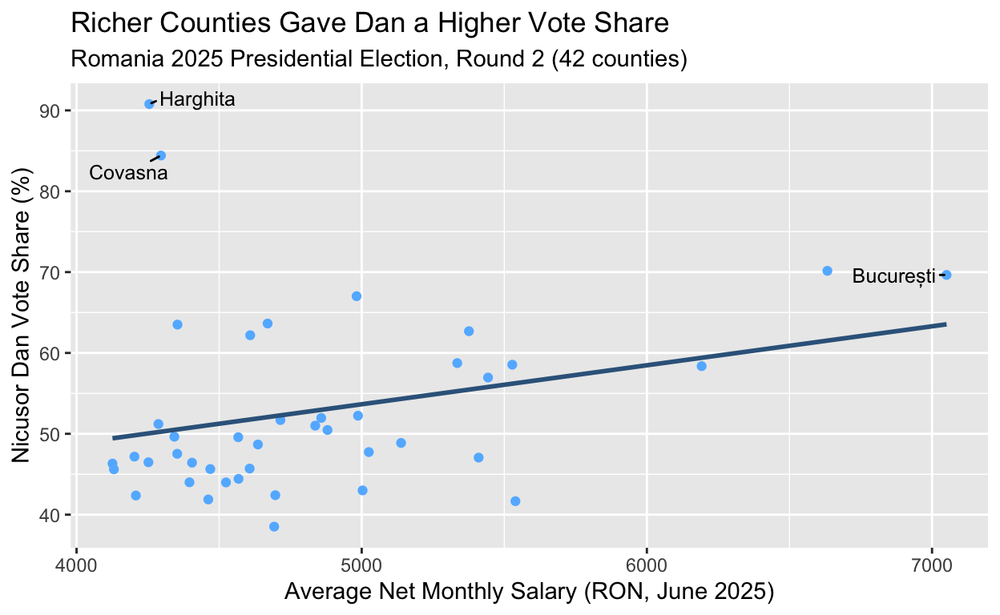

Do Romanian working-class voters feel left behind?
On May 18, 2025, Romania held the second round of its presidential election. Independent candidate Nicusor Dan defeated George Simion (AUR) with 53.6% of the vote nationally, but the county-level map told a more striking story. Dan swept the wealthier, more urbanized counties (Cluj, Timis, Brasov, Bucuresti), while Simion dominated poorer, more rural ones (Gorj, Calarasi, Tulcea, Suceava).
This project merges official AEP election results with county-level economic and demographic indicators to ask: how is county-level support for Nicusor Dan related to average income? I hypothesize that Dan’s vote share will be higher in wealthier counties and lower in poorer ones.
The theoretical logic is that Dan, as an independent pro-EU technocrat, appealed to urban, economically integrated voters, while Simion mobilized support in counties where incomes are lower and dissatisfaction with the economic status quo runs deeper.
My explanatory variable is average net monthly salary (Avg_Net_Salary_RON_Jun2025), measured in RON per county as reported by INS. My outcome variable is Nicusor Dan’s vote share (Nicusor_Dan_Pct), the percentage of valid votes he received in each county. Evidence supporting my hypothesis would be a positive relationship between salary and Dan’s vote share. Evidence against would be a flat or downright negative relationship.
To make this testable, I set up the regression slope on salary as the parameter I care about. The null hypothesis is that salary and Dan’s vote share are unrelated across counties, meaning the true slope is zero. The alternative is that there is some association, positive or negative. Because my hypothesis is directional (more money, more Dan support), I expect a positive slope, but I will use a two-sided test at the usual 0.05 level so I do not give myself credit for a result that happens to land on the “right” side by chance. Following the setup from lecture, the test statistic takes the form of observed value minus null guess, all divided by the standard error, and by the CLT it is approximately standard normal under the null. The decision rule is simple: reject the null if the test statistic is further than 1.96 from zero in either direction, which is the same as rejecting if the p-value is below 0.05.
I create a new variable for the vote margin between the two candidates, convert the Winner column into a factor, bin counties into salary tiers, and flag whether each county is majority urban or rural.
County Nicusor_Dan_Votes Nicusor_Dan_Pct
1 Alba 90248 51.70
2 Arad 96744 47.74
3 Argeș 144461 47.06
4 Bacău 132761 48.87
5 Bihor 182029 63.64
6 Bistrița-Năsăud 65653 49.64
7 Botoșani 73170 45.61
8 Brăila 62978 45.64
9 Brașov 199023 62.69
10 București 749291 69.65
11 Buzău 99466 49.58
12 Călărași 55059 41.88
13 Caraș-Severin 48785 42.41
14 Cluj 298313 70.16
15 Constanța 180853 50.47
16 Covasna 85153 84.42
17 Dâmbovița 107476 45.70
18 Dolj 149161 51.01
19 Galați 126042 51.96
20 Giurgiu 59717 43.99
21 Gorj 59804 38.52
22 Harghita 142248 90.78
23 Hunedoara 87301 46.43
24 Ialomița 49924 44.43
25 Iași 232461 58.75
26 Ilfov 197499 56.96
27 Maramureș 102658 51.21
28 Mehedinți 50656 44.00
29 Mureș 172218 67.02
30 Neamț 102270 47.53
31 Olt 80832 43.00
32 Prahova 196928 52.24
33 Sălaj 67460 62.19
34 Satu Mare 89328 63.51
35 Sibiu 126977 58.55
36 Suceava 123695 42.37
37 Teleorman 69572 46.48
38 Timiș 216694 58.37
39 Tulcea 40054 41.67
40 Vâlcea 81224 46.32
41 Vaslui 76977 48.68
42 Vrancea 71889 47.18
George_Simion_Votes George_Simion_Pct Winner Total_Valid_Votes
1 84307 48.30 Dan 174555
2 105901 52.26 Simion 202645
3 162489 52.94 Simion 306950
4 138900 51.13 Simion 271661
5 103995 36.36 Dan 286024
6 66610 50.36 Simion 132263
7 87243 54.39 Simion 160413
8 75009 54.36 Simion 137987
9 118474 37.31 Dan 317497
10 326451 30.35 Dan 1091406
11 101161 50.42 Simion 200627
12 76416 58.12 Simion 131475
13 66237 57.59 Simion 115022
14 126885 29.84 Dan 425198
15 177458 49.53 Dan 358311
16 15721 15.58 Dan 100874
17 127676 54.30 Simion 235152
18 143278 48.99 Dan 292439
19 116516 48.04 Dan 242558
20 76035 56.01 Simion 135752
21 95439 61.48 Simion 155243
22 14439 9.22 Dan 156687
23 100733 53.57 Simion 188034
24 62448 55.57 Simion 112372
25 163233 41.25 Dan 395694
26 149226 43.04 Dan 346725
27 97812 48.79 Dan 200470
28 64463 56.00 Simion 115119
29 84764 32.98 Dan 256982
30 112895 52.47 Simion 215165
31 107130 57.00 Simion 187962
32 180022 47.76 Dan 376950
33 41016 37.81 Dan 108476
34 51327 36.49 Dan 140655
35 89905 41.45 Dan 216882
36 168234 57.63 Simion 291929
37 80095 53.52 Simion 149667
38 154517 41.63 Dan 371211
39 56058 58.33 Simion 96112
40 94114 53.68 Simion 175338
41 81139 51.32 Simion 158116
42 80476 52.82 Simion 152365
Turnout_Pct Population_2024 Pct_Urban GDP_Per_Capita_RON_2023
1 58.45 325697 53.7 74376
2 54.14 410871 56.0 74217
3 61.21 564829 49.6 71442
4 46.96 595888 47.0 51829
5 58.34 555957 55.8 66071
6 51.29 297082 40.4 50203
7 43.41 389748 33.4 36955
8 51.92 274751 65.5 60174
9 61.34 557129 68.2 94456
10 61.26 1721784 100.0 247744
11 55.96 398344 43.9 51602
12 55.86 279349 34.0 43248
13 46.29 243685 65.7 65406
14 69.61 693507 67.8 123387
15 59.26 657419 66.9 98870
16 56.92 199675 45.1 56863
17 57.39 476962 41.9 54778
18 53.91 598371 63.5 64810
19 47.23 493009 64.9 50866
20 64.58 258661 27.1 39529
21 54.80 310056 53.2 103088
22 59.84 292148 44.5 59434
23 52.79 354879 78.9 64384
24 51.70 249364 38.1 54846
25 49.41 778689 57.8 67908
26 81.06 583663 25.7 79518
27 48.24 451881 50.9 56397
28 52.89 230094 52.2 57143
29 55.40 519831 55.8 64875
30 48.23 447776 39.1 50200
31 55.18 376539 43.8 48781
32 60.58 688976 58.1 91694
33 57.26 210656 40.4 61555
34 45.80 330701 52.9 56223
35 57.32 393581 68.6 84126
36 48.71 645196 34.1 44719
37 53.75 315482 36.5 54595
38 59.52 663543 73.8 107615
39 52.79 189336 50.2 66609
40 56.76 340637 51.4 62781
41 37.54 369517 39.2 34676
42 50.89 332313 39.1 45365
GDP_Per_Capita_USD_PPP_2023 Avg_Net_Salary_RON_Jun2025
1 42286 4715
2 42196 5025
3 40618 5410
4 29467 5138
5 37564 4670
6 28542 4343
7 21010 4131
8 34212 4469
9 53702 5376
10 140854 7051
11 29338 4567
12 24588 4462
13 37186 4697
14 70151 6633
15 56212 4880
16 32329 4296
17 31144 4607
18 36847 4837
19 28920 4858
20 22245 4524
21 58610 4693
22 33791 4255
23 36605 4405
24 31183 4568
25 38609 5335
26 45209 5443
27 32064 4287
28 32488 4396
29 36884 4982
30 28541 4353
31 27734 5003
32 52132 4987
33 34997 4609
34 31965 4354
35 47830 5528
36 25425 4208
37 31040 4252
38 61184 6192
39 37870 5539
40 35694 4126
41 19715 4636
42 25792 4203
Pct_Male_Census2021 Pct_Female_Census2021 Pct_Age_0_14
1 48.9 51.1 14.5
2 48.4 51.6 15.0
3 48.7 51.3 14.2
4 49.0 51.0 16.0
5 48.8 51.2 15.8
6 49.2 50.8 15.5
7 49.1 50.9 16.5
8 47.8 52.2 13.5
9 48.2 51.8 15.0
10 46.8 53.2 14.5
11 48.5 51.5 14.0
12 48.9 51.1 15.0
13 48.3 51.7 13.0
14 47.5 52.5 15.5
15 48.3 51.7 15.3
16 49.0 51.0 14.5
17 49.0 51.0 15.0
18 47.8 52.2 14.0
19 48.3 51.7 15.0
20 49.3 50.7 15.5
21 48.5 51.5 13.5
22 49.0 51.0 15.0
23 48.0 52.0 13.5
24 48.8 51.2 14.5
25 48.5 51.5 17.0
26 49.0 51.0 18.0
27 49.0 51.0 15.5
28 48.0 52.0 13.0
29 48.8 51.2 15.0
30 48.8 51.2 15.0
31 48.2 51.8 13.5
32 48.3 51.7 14.5
33 49.2 50.8 15.5
34 48.8 51.2 15.5
35 48.2 51.8 15.0
36 49.3 50.7 17.0
37 48.0 52.0 12.0
38 48.0 52.0 15.5
39 48.5 51.5 14.0
40 48.0 52.0 13.0
41 49.2 50.8 16.5
42 48.8 51.2 15.0
Pct_Age_15_64 Pct_Age_65_Plus Median_Age_Approx Dan_Margin
1 65.5 20.0 43.5 3.40
2 65.3 19.7 42.8 -4.52
3 65.0 20.8 43.8 -5.88
4 64.5 19.5 41.5 -2.26
5 65.0 19.2 42.0 27.28
6 65.0 19.5 41.8 -0.72
7 63.5 20.0 41.0 -8.78
8 64.1 22.4 45.5 -8.72
9 66.0 19.0 42.5 25.38
10 68.5 17.0 41.0 39.30
11 63.8 22.2 44.8 -0.84
12 63.5 21.5 43.5 -16.24
13 65.5 21.5 45.0 -15.18
14 68.5 16.0 40.0 40.32
15 65.5 19.2 42.5 0.94
16 65.5 20.0 43.0 68.84
17 64.0 21.0 43.0 -8.60
18 65.0 21.0 44.0 2.02
19 64.5 20.5 43.0 3.92
20 63.0 21.5 43.5 -12.02
21 65.0 21.5 44.5 -22.96
22 65.0 20.0 42.5 81.56
23 65.5 21.0 44.5 -7.14
24 63.5 22.0 44.0 -11.14
25 67.2 15.8 39.5 17.50
26 68.2 13.8 37.5 13.92
27 65.0 19.5 42.0 2.42
28 64.0 23.0 46.0 -12.00
29 65.5 19.5 42.5 34.04
30 64.0 21.0 43.5 -4.94
31 64.0 22.5 45.0 -14.00
32 65.0 20.5 43.5 4.48
33 65.0 19.5 42.0 24.38
34 65.0 19.5 42.0 27.02
35 66.0 19.0 42.0 17.10
36 64.0 19.0 40.5 -15.26
37 60.9 27.1 48.0 -7.04
38 68.3 16.2 40.5 16.74
39 64.5 21.5 44.0 -16.66
40 62.6 24.4 46.0 -7.36
41 63.5 20.0 41.0 -2.64
42 64.0 21.0 43.0 -5.64
Salary_Group Urban_Rural
1 Mid (4500-5500) Majority Urban
2 Mid (4500-5500) Majority Urban
3 Mid (4500-5500) Majority Rural
4 Mid (4500-5500) Majority Rural
5 Mid (4500-5500) Majority Urban
6 Low (under 4500) Majority Rural
7 Low (under 4500) Majority Rural
8 Low (under 4500) Majority Urban
9 Mid (4500-5500) Majority Urban
10 High (above 5500) Majority Urban
11 Mid (4500-5500) Majority Rural
12 Low (under 4500) Majority Rural
13 Mid (4500-5500) Majority Urban
14 High (above 5500) Majority Urban
15 Mid (4500-5500) Majority Urban
16 Low (under 4500) Majority Rural
17 Mid (4500-5500) Majority Rural
18 Mid (4500-5500) Majority Urban
19 Mid (4500-5500) Majority Urban
20 Mid (4500-5500) Majority Rural
21 Mid (4500-5500) Majority Urban
22 Low (under 4500) Majority Rural
23 Low (under 4500) Majority Urban
24 Mid (4500-5500) Majority Rural
25 Mid (4500-5500) Majority Urban
26 Mid (4500-5500) Majority Rural
27 Low (under 4500) Majority Urban
28 Low (under 4500) Majority Urban
29 Mid (4500-5500) Majority Urban
30 Low (under 4500) Majority Rural
31 Mid (4500-5500) Majority Rural
32 Mid (4500-5500) Majority Urban
33 Mid (4500-5500) Majority Rural
34 Low (under 4500) Majority Urban
35 High (above 5500) Majority Urban
36 Low (under 4500) Majority Rural
37 Low (under 4500) Majority Rural
38 High (above 5500) Majority Urban
39 High (above 5500) Majority Urban
40 Low (under 4500) Majority Urban
41 Mid (4500-5500) Majority Rural
42 Low (under 4500) Majority Rural| Type | Avg Dan % | Avg Simion % | Avg Salary (RON) | N Counties |
|---|---|---|---|---|
| Majority Rural | 51.9 | 48.1 | 4579.4 | 19 |
| Majority Urban | 53.6 | 46.4 | 5045.0 | 23 |
| Salary Group | Avg Dan % | Avg Simion % | N Counties |
|---|---|---|---|
| High (above 5500) | 59.7 | 40.3 | 5 |
| Low (under 4500) | 52.9 | 47.1 | 15 |
| Mid (4500-5500) | 51.3 | 48.7 | 22 |
ggplot(data = vote_clean,
mapping = aes(x = Avg_Net_Salary_RON_Jun2025,
y = Nicusor_Dan_Pct)) +
geom_point(color = "steelblue1") +
geom_smooth(method = "lm", se = FALSE, color = "steelblue4") +
labs(x = "Average Net Monthly Salary (RON, June 2025)",
y = "Nicusor Dan Vote Share (%)")
The plot shows a positive relationship between average salary and Nicusor Dan’s vote share across Romania’s 42 counties. As average monthly salary rises, Dan’s vote share tends to rise with it, consistent with the hypothesis that wealthier counties were more supportive of the moderate pro-EU independent candidate.
The relationship is positive but not tight. There is substantial scatter around the line. Bucuresti appears as a high-salary, high-support point in the upper right, while Harghita and Covasna sit well above the line, with extremely high Dan vote share despite only moderate incomes. These two counties are majority Hungarian-speaking and have a distinct voting history, suggesting that factors beyond income (regional identity, ethnicity, Simion’s xenophobia) also shape vote choice.
To put a number on the relationship and formally test whether the slope on salary is different from zero, I fit a linear regression of Dan’s vote share on average net monthly salary.
Call:
lm(formula = Nicusor_Dan_Pct ~ Avg_Net_Salary_RON_Jun2025, data = vote_clean)
Residuals:
Min 1Q Median 3Q Max
-14.584 -6.055 -2.621 2.054 40.716
Coefficients:
Estimate Std. Error t value Pr(>|t|)
(Intercept) 29.552264 12.860019 2.298 0.0269 *
Avg_Net_Salary_RON_Jun2025 0.004821 0.002637 1.828 0.0750 .
---
Signif. codes: 0 '***' 0.001 '**' 0.01 '*' 0.05 '.' 0.1 ' ' 1
Residual standard error: 10.96 on 40 degrees of freedom
Multiple R-squared: 0.07711, Adjusted R-squared: 0.05403
F-statistic: 3.342 on 1 and 40 DF, p-value: 0.075The estimated slope on salary is about 0.00482. Because salary is measured in RON and Dan’s vote share is measured in percentage points, that coefficient says each extra 1 RON of average monthly salary is associated with about a 0.00482 percentage-point increase in Dan’s vote share. That number is hard to feel, so rescaling: every additional 1,000 RON of average monthly salary is associated with roughly a 4.82 percentage-point increase in Dan’s vote share.
The intercept is about 29.55, which would be the model’s prediction for Dan’s vote share in a county with zero average salary. That number has no substantive interpretation (no such county exists, and even Romania’s poorest counties are nowhere near zero), it is just where the line crosses the y-axis to fit the data that does exist.
Now the hypothesis test. The summary() output gives a test statistic for the salary coefficient of about 1.83 and a p-value of about 0.075. Reading those through the lecture framework: the test statistic is the slope divided by its standard error, so 1.83 means the estimated slope is about 1.83 standard errors away from zero. The decision rule was to reject the null if that statistic was further than 1.96 from zero, and 1.83 does not clear that bar. Equivalently, the p-value of 0.075 says that if the true slope really were zero, we would still see a slope at least this large in absolute value about 7.5% of the time just from random sampling variation across counties. That is uncommon, but not rare enough to rule out chance at the 0.05 level (95 CI)
Thus, strictly speaking, I failed to reject the null hypothesis. I would like to be careful with the language I use here because “failed to reject” is not the same as “accepted.” The data is directionally consistent with my hypothesis (the sign is positive, the magnitude is meaningful, the p-value is not too far from 0.05), but the evidence is not strong enough to rule out the possibility that the pattern is noise. With only 42 counties, the sample is small and the standard error on the slope is correspondingly wide, so borderline p-values should be expected even when a real effect exists.
Harghita and Covasna are clear outliers in the scatterplot above. Both gave Dan well over 80% of the vote despite having only moderate average salaries, and the reason is well understood in Romanian politics: they are the two counties where ethnic Hungarians are the majority, and the Hungarian minority has historically voted as a bloc against Romanian nationalist candidates like Simion, having done the same in previous electionss where a far-right candidate reached the second round of the presidential elections. Their support for Dan is driven by ethnic identity, not by income. Since my hypothesis is specifically about an income-vote share relationship, it is worth checking what the picture looks like with those two counties set aside.
vote_no_hun <- vote_clean |>
filter(!(County %in% c("Harghita", "Covasna")))
ggplot(data = vote_no_hun,
mapping = aes(x = Avg_Net_Salary_RON_Jun2025,
y = Nicusor_Dan_Pct)) +
geom_point(color = "steelblue1") +
geom_smooth(method = "lm", se = FALSE, color = "steelblue4") +
labs(x = "Average Net Monthly Salary (RON, June 2025)",
y = "Nicusor Dan Vote Share (%)")
fit_no_hun <- lm(Nicusor_Dan_Pct ~ Avg_Net_Salary_RON_Jun2025, data = vote_no_hun)
summary(fit_no_hun)
Call:
lm(formula = Nicusor_Dan_Pct ~ Avg_Net_Salary_RON_Jun2025, data = vote_no_hun)
Residuals:
Min 1Q Median 3Q Max
-14.5059 -3.9740 0.0161 2.2332 16.1873
Coefficients:
Estimate Std. Error t value Pr(>|t|)
(Intercept) 14.793716 8.107396 1.825 0.0759 .
Avg_Net_Salary_RON_Jun2025 0.007471 0.001653 4.520 5.87e-05 ***
---
Signif. codes: 0 '***' 0.001 '**' 0.01 '*' 0.05 '.' 0.1 ' ' 1
Residual standard error: 6.74 on 38 degrees of freedom
Multiple R-squared: 0.3496, Adjusted R-squared: 0.3325
F-statistic: 20.43 on 1 and 38 DF, p-value: 5.874e-05With Harghita and Covasna removed, the relationship tightens noticeably. The slope on salary gets larger, the standard error shrinks, and the p-value drops below the 0.05 threshold, meaning on this subsample I would actually reject the null of no association. In substantive terms, once I am looking only at counties where the vote is not being driven by ethnic-minority bloc behavior, the income story looks considerably stronger: richer counties really did give Dan more support, at a rate that is now distinguishable from chance. The R-squared also rises, telling me salary explains a larger share of the variation among the remaining 40 counties than it did in the full 42.
This does not mean I should “prefer” the result without Harghita and Covasna, because dropping inconvenient data points until the p-value falls is the kind of p-hacking that makes others’ results untrustworthy. What it does mean is that the weak bivariate result in the full sample was partly masked by two counties that are unusual for reasons my theory does not speak to, and once that noise is set aside, the income pattern emerges more clearly. The honest reading is that both regressions are informative: the full-sample one tells me that any interpretation of Romanian voting behavior must reckon with ethnic politics, and the restricted-sample one tells me that within the ethnic-Romanian majority of the country, the income-vote share relationship is real.
A few caveats that any responsible reader shall keep in mind:
First, nothing here is causal. Counties are not randomly assigned their income levels, and these are correlated with things I have not measured: education, median age, ethnic composition, exposure to diaspora media. The regression tells me what predicts what, not what causes what. A true causal estimate would require something like an instrumental variable or a natural experiment, neither of which I have.
Second, 42 is a small n for drawing strong conclusions, and 40 is definitely not much better. Running the same analysis at the UAT level (n > 3000) would very likely produce tighter standard errors and a clearer verdict either way, however clean datasets including average income at that granular a level are not readily available to the public.
Third, the robustness check using the restricted sample is a probing of, not replacement to, the main result. The “real” political story of the election is one in which Harghita and Covasna exist and vote the way they do, and any model of Romanian voting that drops them permanently would be hiding part of the picture rather than clarifying it.
The analysis gives modest, directionally consistent, and partly sample-dependent support for my hypothesis. In the full 42-county sample, the point estimate is in the predicted direction and the magnitude is politically meaningful (about 4.8 percentage points of Dan vote share per additional 1,000 RON of average salary), but the bivariate p-value of 0.075 means I cannot formally reject the null of no association at the 0.05 level. However, excluding the two Hungarian-majority counties, whose vote choice was plainly driven by ethnicity rather than other factors, produces a clearly significant income slope in the bivariate model. The honest reading across both of my regressions is that income does have a real (non-causal) association with Dan’s vote share within the ethnic-Romanian majority of the country, but that association is partly masked in the full sample by the distinct behavior of the Hungarian counties.
Sources: AEP/prezenta.roaep.ro (election results); OECD Regional Statistics (GDP); INS TEMPO Online (salary, population); Romanian Census 2021 (demographics).